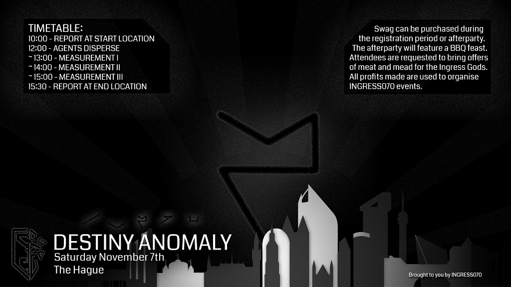
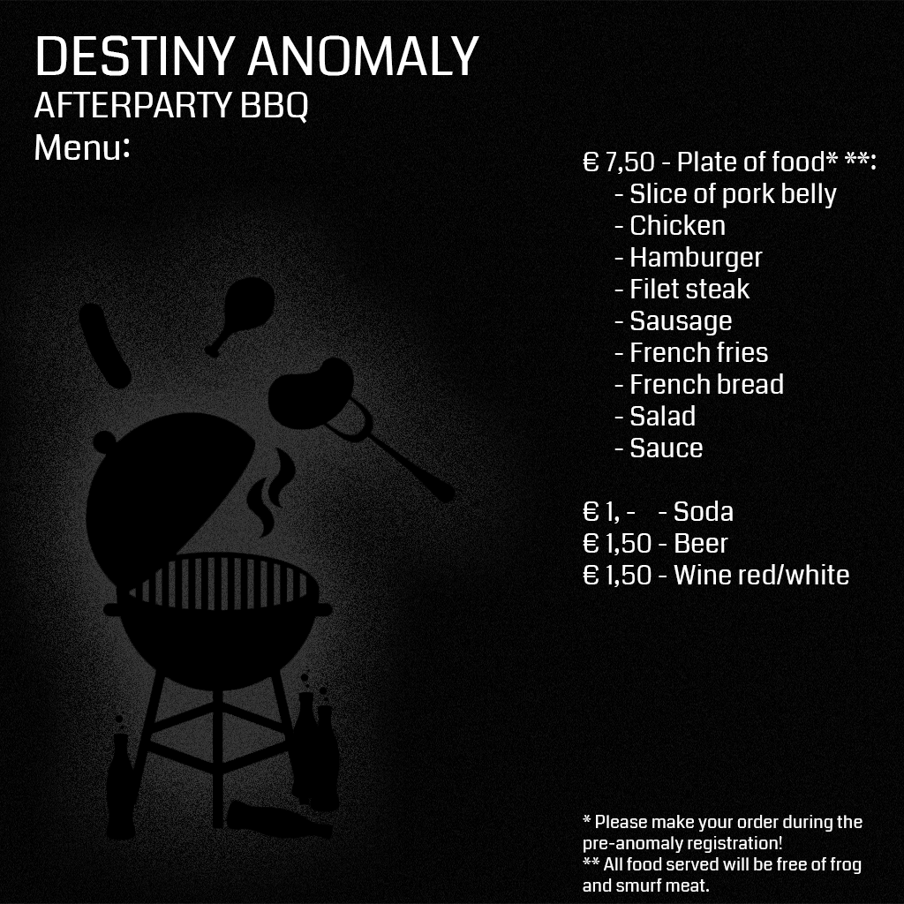

<md-content>
  <md-card md-theme="{{theme}}" md-theme-watch>
    
    <md-card-content>
      <h2 class="md-title">Destiny</h2>
      <p>
        Hello Agents,<br><br>

        One year ago, Niantic announced their latest brainchild; #IngressFS.<br>
        We have come a long way since then. Battling both odds and agents, we have made this event to what it is together.<br>
        One thing became clear: We create our own destiny together.<br><br>

        So this one year aniversary edition of the #IngressFS   we are going to do something completely new:<br>
        Don’t we all want an anomaly here in The Hague? We sure want one!<br>
        We are creating our own anomaly-like- #FS070 . The event starts at the location stated above with the usual banter and coffee.<br>
        When the event has concluded, there will be a BBQ at the start location.<br><br>

        We will anounce the clusters by deaddrops throughout The Hague.<br>
        These deaddrops will contain a list of portals and a code. With the list of portals (printed on coloured paper per cluster) you can define the cluster.<br>
        Also there will be a code included if you want to announce the portals public on this page.<br>
        Friday november the 6th we will post the clusters here, so everybody knows what they are up against.<br><br>

        Keep an eye on the <a href="https://plus.google.com/events/co21t7qqhm164cfg3tik5pt1fd4">event page</a> for deaddrops and hints about the clusters.<br><br>

        The point scoring system will be posted here in the coming days.<br>
        Please keep an eye on the <a href="https://plus.google.com/events/co21t7qqhm164cfg3tik5pt1fd4">event page</a> for potential details about the clusters, point scoring and more.<br>

        See you saturday the 7th!<br><br>

        If you would like to support us in a financial way, you can transfer any amount you like using PayPal to: firstsaturday070@gmail.com<br><br>

        Ingress070 would like to thank Scott Robinson for the help and information about how to set up a mini anomaly!
      </p>
    </md-card-content>
    
  </md-card>
</md-content>